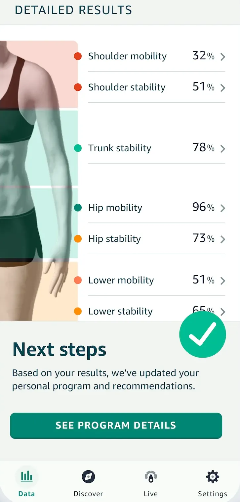

Halo Movement
An assessment of mobility, stability and posture from phone video, with a personal exercise program to improve them.



- Role
- Product lead for Movement, end to end
- Validated
- 150 adults, npj Digital Medicine, 2022
- Result
- More than 80% of members who exercised for two weeks improved
I led Halo Movement end to end: a movement score and program from phone video. I set the score to match a movement expert’s judgment, and cut 10 to 15 exercises to five. Of members who exercised for two weeks, more than 80% improved.
What I decided
Set the score to match an expert’s judgment
I set the target as the score a movement expert would give. Experts annotated example videos with each error and its severity, from 0 to 3. A study of 150 adults then checked it against motion capture and 13 clinical tests.
Cut 10 to 15 exercises to five
Our fitness experts first proposed 10 to 15 exercises, and many were hard for ordinary people. With the computer vision team, I cut the set to five and kept the score aligned with an expert’s.
Built real-time feedback into the workouts
We built real-time feedback into the workouts to make them dynamic, accurate and rich, which motivated people once they had a score. When members asked for more variety in that feedback, we made variety a measured dimension.
How it worked
A movement screen needed a professional
Everyone wants to improve their mobility. A full clinical screen needed a physical therapist and equipment: a goniometer to measure joint angles, foam pads, a hurdle and a plumb line. My goal was a professional-grade mobility assessment and personal exercises, at home, with only a phone.
Five movements, filmed on the phone
A member stood the phone on the floor, leveled it with an on-screen guide, and stepped back into a square framing the body. Five movements followed, including a single-leg balance and an overhead squat, in under 10 minutes. The video was encrypted, analyzed in Amazon’s cloud within seconds and deleted, and no person saw it.

A score out of 100, from the errors an expert would see
Weighted errors became scores for mobility, stability and posture, by body area. The scale ran up to Olympic athletes, so even the most athletic people using Halo would rarely score above 90. That raised a question for the product: whether to reset the scale.
What a score of 81 meant
A score made sense beside the 2022 study’s three groups: athletes, healthy adults and adults with impaired movement.
The data as a table
| Group | Average score |
|---|---|
| Athletes | About 87 |
| Healthy adults | About 81 |
| Adults with impaired movement | About 68 |
A program aimed at the errors found
The same errors chose the corrective exercises in the member’s program: five to seven routines from a library of 35 corrective exercises by the physical therapist Kelly Starrett, each 5 to 10 minutes, at least three times a week.
A new assessment after two weeks
The app recommended two weeks of exercises before a new assessment. Of members who did the recommended exercises for two weeks and reassessed, more than 80% improved by a statistically significant margin. It was an Amazon product measure, separate from the 2022 study.
Amazon’s Movement Health explainer, 2021.
Launch

“Like having a personal trainer and physical therapist in your pocket”TODAY (NBC News), the day after Movement went live
Amazon announced Movement Health on 3 June 2021. It went live on 30 June 2021, included in the $3.99-a-month Halo membership.
What came next
On 6 September 2022, npj Digital Medicine, a Nature Portfolio journal, published the validation study. The score separated athletes, healthy adults and adults with impaired movement, and varied by under 2% across three repeats. A 2024 review of 278 motion-capture studies found it was the only one to report participants’ racial breakdown.